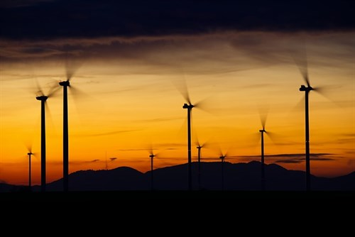

Obnovitelné zdroje
Obnovitelné zdroje dokáží produkovat či vyrábět obnovitelnou energii, která se v lidském měřítku přirozeně obnovuje. Na rozdíl od neobnovitelných zdrojů, které lze snadno a rychleji vyčerpat. Navíc jsou tyto obnovitelné zdroje ekologičtější a v mnohých případech i ekonomičtější. Lze ji využít při výrobě elektrické energie ať už pro průmysl, dopravu nebo pro domácnost. Díky své dlouhodobé udržitelnosti jsou nezbytné k energetické bezpečnosti a k udržitelnému rozvoji. Člověk obnovitelné zdroje využívá pro své potřeby již od pravěku, největší nárůst zájmu však nastal až v 70. letech 20. století v důsledku ropné krize.
Druhy obnovitelných zdrojů
- Sluneční energie: Energie získávaná ze Slunce představuje drtivou většinu všech využívaných obnovitelných zdrojů.
- Vodní energie: Vodní energie se v dnešní době využívá nejvíce ve vodních elektrárnách pro přeměnu na elektrickou energii.
- Větrná energie: Používá se k vytváření elektrické energie za pomoci větrných elektráren s hlavním využitím proudění větru.
- Biomasa: V obnovitelných zdrojích má důležité místo i biomasa, konkrétně biopaliva. Ta můžeme rozdělit na tuhá, kapalná a plynná. Biopaliva vznikají cílenou přípravou či výrobou z biomasy.
- Další obnovitelné zdroje: Mezi další obnovitelné zdroje bychom mohli uvést energii přílivu nebo geotermální energie, což je přirozený projev tepelné energie zemského jádra.

Solární energie
Přímé využití energie získané ze slunečního záření patří z ekologického hlediska a z hlediska ochrany životního prostředí k těm nejčistším a nejvíce šetrným metodám výroby elektřiny vůbec. Sluneční výkon mnohonásobně přesahuje teoretickou a možnou spotřebu lidstva. V dnešní době jsme však schopni využívat pouze malou část. I přesto mají solární elektrárny nebo solární kolektory, které využívají slunečního záření velký potenciál. Ve vyspělých státech s využitím solární energie do budoucna počítají. Tento způsob získání energií je totiž snadno dostupný, ekologický, ekonomický, nenáročný na údržbu a i přes vyšší pořizovací náklady je rentabilní i pro využití v běžné domácnosti.
Výhody obnovitelných zdrojů
Obnovitelné zdroje mají velký potenciál a možnost využití do budoucna. Při jejich zpracování či využívání nedochází k téměř žádnému nebo zanedbatelnému vytváření skleníkových plynů a emisí. Navíc je jejich provoz zcela bezdopadový a navíc velmi bezpečný. Na rozdíl od neobnovitelných zdrojů nedochází ke znečišťování ovzduší a nevzniká téměř žádný odpad.
Solární elektrárna »